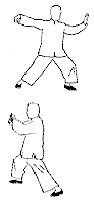
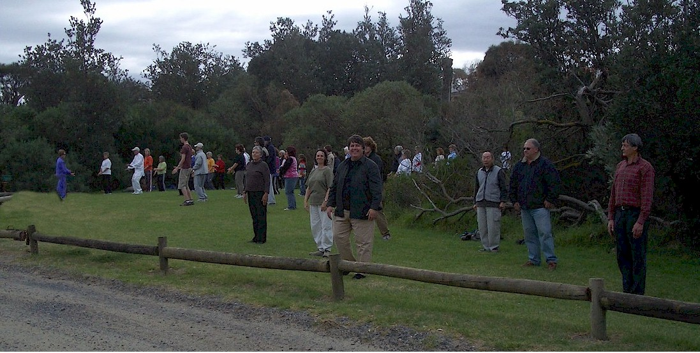

| Join a community of Tai Chi practitioners
and Tai Chi schools in Melbourne, Australia to get together once a year to celebrate World
T'ai Chi & QiGong Day.
Short history of World Tai Chi day in Melbourne. NEW! |
 |
Ricketts Point, 10 am - 12
Ricketts Point, Beach Road Beaumaris, Melways reference 86 C9
Meet 100 metres south of the cafe either on the sand or the grass.
Everyone welcome.
Details Jackie 9598 4881 or Andy 0412 759 186
Do your own form with your own group.
Demonstrate a sword form or anything of interest!
Event a Success!

Melbourne, Australia by the beach at Rickett's Point. 60 people at once and a total of 100 coming and going throughout the 10AM to 12 PM two hour period.
More photos of the 2005 Melbourne event here.
Photos of the 2005 in other counties here.
Membership is free.
Please join the mailing list to be notified about this function every year. Tell your friends to join the mailing list!
Go to http://groups.yahoo.com/group/taichi-melb-community/
or to subscribe by sending an email to : taichi-melb-community-subscribe@yahoogroups.com
Post message taichi-melb-community@yahoogroups.com
The official web page for this Melbourne Tai Chi Community is http://www.atug.com/taichimelbourne
For a personal email or phone contact - phone Andy Bulka on 0412-759-186